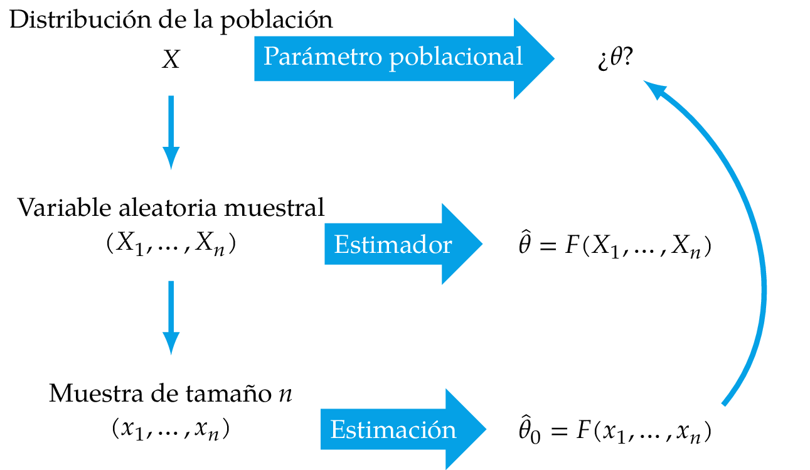
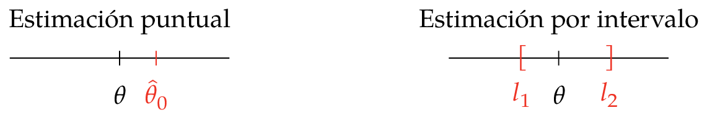
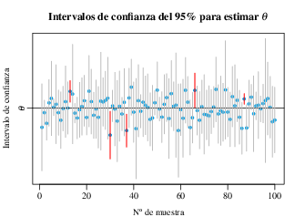
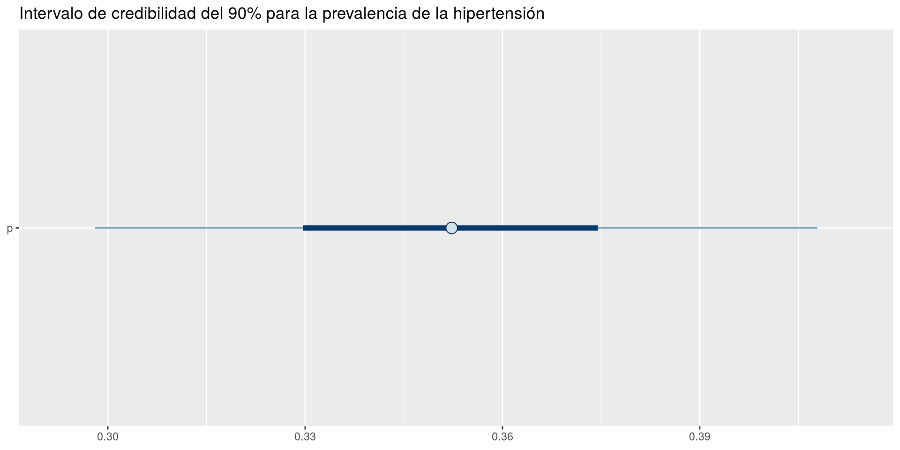
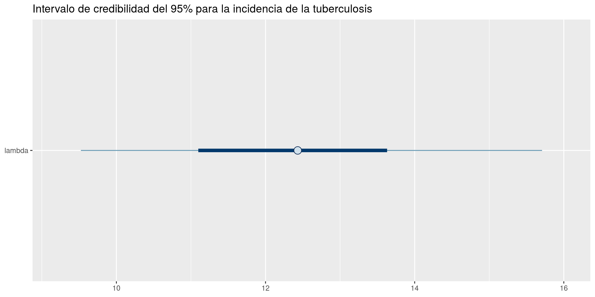
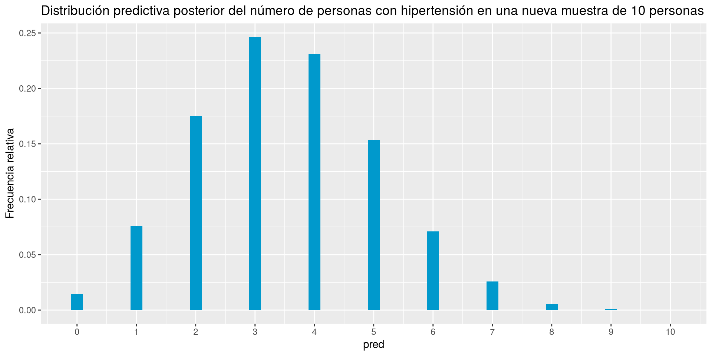
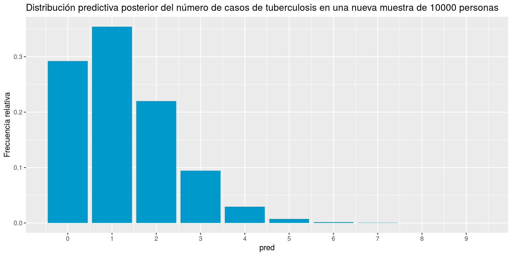

Estimación de parámetros, intervalos de credibilidad, contraste de hipótesis y predicciones
Alfredo Sánchez Alberca
Estimación de parámetros
Estimación frecuentista
En Estadística frecuentista, la una estimación de un parámetro desconocido es un valor que se obtiene a partir de la muestra observada y que se utiliza como una aproximación del valor real del parámetro.
La función que se aplica a la muestra para obtener la estimación se llama estimador.

Estimación frecuentista
Estimación puntual y por intervalos
La estimación de un parámetro puede ser puntual (un único valor) o por intervalos (intervalos de confianza).

Estimación puntual y por intervalos
Definición 1 (Intervalo de confianza) Dados dos estimadores \(li(x)\) y \(ls(x)\), se dice que el intervalo \([li(x), ls(x)]\) es un intervalo de confianza para el parámetro \(\theta\) con nivel de confianza \(1-\alpha\) si se cumple que
\[
P(li(X) \leq \theta \leq ls(X)) = 1-\alpha
\]
Teniendo en cuenta que no hay una distribución de probabilidad que refleje la incertidumbre sobre el parámetro \(\theta\), sino sobre los límites del intervalo.
¿Cómo se interpreta un intervalo de confianza?
Interpretación de un intervalo de confianza
Si repitiéramos el experimento infinitas veces y construyéramos un intervalo de cada muestra, el 95% de esos intervalos hipotéticos contendrían el verdadero \(\theta\).

Simulación de 100 intervalos de confianza
Esta interpretación es contrafactual y genera muchos errores.
Estimación bayesiana
En Estadística bayesiana, la estimación de un parámetro desconocido es la propia distribución a posteriori del parámetro. La distribución a posteriori refleja la incertidumbre sobre el valor del parámetro después de haber observado los datos.
La distribución a posteriori se suele describir con distintas medidas:
Medidas de tendencia central: Media, mediana o moda.
Medidas de posición: Cuantiles.
Medidas de dispersión: Varianza, desviación típica o intervalo de credibilidad.
Intervalo de credibilidad
Definición 2 (Intervalo de credibilidad) Dada una distribución a posteriori de un parámetro \(\theta|x\), un intervalo de credibilidad con nivel \(1-\alpha\) es un intervalo \([li, ls]\) tal que \[
P(\theta \in [li, ls]|x) = 1-\alpha.
\]
La interpretación de un intervalo de credibilidad es más natural:
Dado el intervalo de credibilidad \([li, ls]\) del 95%, la probabilidad de que el parámetro \(\theta\) esté dentro de ese intervalo es del 95%.
Habitualmente, para construir un intervalo de credibilidad \(1-\alpha\%\) se suele tomar los percentiles \(\alpha/2\) y \(1-\alpha/2\) de la distribución a posteriori.
Ejemplo 1 Para estimar la prevalencia de la hipertensión en mayores de 18 años usamos un modelo Beta-Binomial con prior \(\mbox{Beta}(4, 6)\). Si tomamos una muestra de 200 personas y encontramos 70 con hipertensión, veamos cómo obtener el intervalo de credibilidad del 90% para la prevalencia.
library(rstan)modelo <-"data{ int<lower=0> n; // tamaño de la muestra int<lower=0> k; // número de éxitos}parameters{ real<lower=0, upper=1> p; // prevalencia de la hipertensión}model{ p ~ beta(4, 6); // prior k ~ binomial(n, p); // verosimilitud}"post <-stan(model_code = modelo, data =list(n =200, k =70), chains =4, iter =5000*2, seed =123)
library(knitr)summary(post, pars ="p", probs =c(0.05, 0.95))$summary |>kable()
mean
se_mean
sd
5%
95%
n_eff
Rhat
p
0.3522835
0.0003802
0.0332224
0.2980397
0.4078749
7634.017
1.000134
Podemos obtener también el intervalo de credibilidad con las funciones spread_draws y mean_qi del paquete tidybayes.
spread_draws
Extrae las muestras de la distribución a posteriori obtenidas con MCMC y las organiza en un formato tidy para su posterior análisis.
Parámetros:
post: El objeto que contiene las muestras de la distribución a posteriori obtenidas con MCMC.
p: El nombre del parámetro del que queremos extraer las muestras.
mean_qi
Calcula la media y los intervalos de credibilidad de una distribución a posteriori a partir de las muestras obtenidas con MCMC.
Parámetros:
.data: Un data frame con las muestras de la distribución a posteriori obtenidas con MCMC.
Podemos usar la función mcmc_intervals del paquete bayesplot para dibujar los intervalos de credibilidad de la distribución a posteriori.
mcmc_intervals
Dibuja intervalos de credibilidad para los parámetros de una distribución a posteriori a partir de las muestras obtenidas con simulación de Monte Carlo.
Parámetros:
post: El objeto que contiene las muestras de la distribución a posteriori obtenidas con simulación de Monte Carlo.
pars: Un vector de caracteres con los nombres de los parámetros para los que se quieren dibujar los intervalos de credibilidad.
prob: Nivel de credibilidad.
prob_outer: Nivel de credibilidad para el intervalo exterior (opcional).
point_est: Método para calcular el punto de estimación central (media, mediana o moda).
Ejemplo 2 Veamos cómo dibujar los intervalos de credibilidad calculados en el ejemplo anterior para la prevalencia de la hipertensión.
library(tidyverse)library(bayesplot)mcmc_intervals(post, pars ="p", prob =0.5, prob_outer =0.9, point_est ="mean") +labs(title ="Intervalo de credibilidad del 90% para la prevalencia de la hipertensión") +theme_gray()

Ejercicio 1 Los datos históricos del sistema de vigilancia epidemiológica sugieren que la incidencia de la tuberculosis en una población está entre 8 y 15 casos por cada 100.000 habitantes-año. Si en el último año se han registrado 48 nuevos casos en una población de 300.000 habitantes, ¿cuál es el intervalo de credibilidad del 95% para la incidencia de la tuberculosis en esa población?
Tras el calibrado de la distribución Gamma para ajustarla a la variabilidad de \(\lambda\), utilizaremos una distribución a priori \(\mbox{Gamma}(27.5, 2.5)\).
Solución
modelo <-"data { int<lower=0> y; // número de casos de tuberculosis}parameters { real<lower=0> lambda; // incidencia}model { y ~ poisson(lambda); // función de verosimilitud lambda ~ gamma(27.5, 2.5); // distribución a priori}"post_lambda <-stan(model_code = modelo, data =list(y =48/3), chains =4, iter =5000*2, seed =123)
library(tidyverse)library(bayesplot)mcmc_intervals(post_lambda, pars ="lambda", prob =0.5, prob_outer =0.9, point_est ="mean") +labs(title ="Intervalo de credibilidad del 95% para la incidencia de la tuberculosis") +theme_gray()

Contrastes de hipótesis
Hipótesis estadística
Definición 3 (Hipótesis estadística) Una hipótesis estadística es cualquier afirmación o conjetura que determina, total o parcialmente, la distribución de una o varias variables de la población.
Cuando las hipótesis se formulan sobre los parámetros que describen una distribución se dice que son hipótesis paramétricas.
Ejemplo 3 Para valorar la gravedad de una epidemia de gripe, podríamos estar interesados en contrastar si la incidencia por cada 100000 personas-día es mayor de 20.
Contrastes de hipótesis paramétricos en Estadística frecuentista
En Estadística frecuentista un contraste de hipótesis se realiza eligiendo entre dos hipótesis antagónicas:
\(H_0\): hipótesis nula
\(H_1\): hipótesis alternativa
La hipótesis nula siempre asigna al parámetro un valor concreto, mientras que la alternativa suele ser una hipótesis abierta que, aunque opuesta a la hipótesis nula, no fija el valor del parámetro.
Esto da lugar a tres tipos de contrastes:
Bilateral
Unilateral menor
Unilateral mayor
\(H_0\): \(\theta = \theta_0\)
\(H_0\): \(\theta = \theta_0\)
\(H_0\): \(\theta = \theta_0\)
\(H_1\): \(\theta \neq \theta_0\)
\(H_1\): \(\theta < \theta_0\)
\(H_1\): \(\theta > \theta_0\)
Errores en la toma de decisiones
En un contraste de hipótesis frecuentista, se pueden cometer dos tipos de errores:
Error de tipo I: Se comete cuando se rechaza la hipótesis nula siendo esta verdadera.
Error de tipo II: Se comete cuando se acepta la hipótesis nula siendo esta falsa.
Decisión
\(H_0\) cierta
\(H_1\) cierta
Aceptar \(H_0\)
Decisión correcta
Error de tipo II
Rechazar \(H_0\)
Error de tipo I
Decisión correcta
La probabilidad de cometer un error de tipo I se conoce como \(p\)-valor.
Aceptación o rechazo de la hipótesis nula
La decisión sobre la aceptación o rechazo de la hipótesis nula se basa en el cálculo de un estadístico de prueba a partir de la muestra observada y su comparación con una distribución de referencia bajo la hipótesis nula.
El \(p\)-valor es la probabilidad de obtener un valor del estadístico de prueba tan extremo o más extremo que el observado, asumiendo que la hipótesis nula es cierta.
Habitualmente la regla de decisión es
p-valor
Decisión
\(p \leq \alpha\)
Rechazar \(H_0\)
\(p > \alpha\)
No rechazar \(H_0\)
donde \(\alpha\) es el nivel de significación, que es la probabilidad máxima de cometer un error de tipo I que estamos dispuestos a aceptar.
Habitualmente se suele tomar \(\alpha = 0.05\), por lo que la metodología para decidir entre \(H_0\) y \(H_1\) favorece \(H_0\), que es la hipótesis conservadora, y solo se rechaza \(H_0\) si la evidencia en contra de \(H_0\) es suficientemente fuerte.
Interpretación de la decisión
Cuando el \(p\)-valor es menor que \(\alpha\), se rechaza la hipótesis nula y se concluye que hay suficiente evidencia para apoyar la hipótesis alternativa.
¿Qué significa esto exactamente?
Un \(p\)-valor menor que \(\alpha\) no significa que la hipótesis alternativa sea cierta, sino que los datos observados son poco compatibles con la hipótesis nula, es decir, que si la hipótesis nula fuera cierta y repitiésemos el experimento muchas veces, obtendríamos un resultado tan extremo como el observado en menos del \(\alpha\)% de las ocasiones.
De nuevo esta interpretación es contrafactual y genera muchos errores.
Hipótesis bayesianas
En Estadística bayesiana, las hipótesis se pueden formular de manera más flexible, ya que no es necesario que la hipótesis nula asigne un valor concreto al parámetro. Normalmente la hipótesis nula suele plantear un intervalo de valores para el parámetro, mientras que la alternativa contempla el resto de valores.
En Estadística bayesiana, un contraste de hipótesis se realiza de manera mucho más natural calculando la probabilidad a posteriori de las hipótesis que se quieren contrastar.
La mayoría de las veces no calcularemos esta integral, sino que la aproximaremos a partir de las muestras de la distribución a posteriori obtenidas con simulación.
Esta metodología no da ventaja a ninguna de las hipótesis.
Ejemplo 4 En el ejemplo de la prevalencia de la hipertensión, podríamos estar interesados en contrastar si la prevalencia es mayor que el 30%. Para ello, habría que calcular la probabilidad
\[
P(p > 0.3|x) = \int_{0.3}^{1} f(p|x) \, dp
\]
que puede aproximarse con el siguiente código.
post |>spread_draws(p) |>summarise(prob =mean(p >0.3)) |>kable()
prob
0.9434
Ejercicio 2 En el ejemplo de la incidencia de la tuberculosis, realizar el contraste para ver si la incidencia es mayor que el 15% por cada 100.000 habitantes-año.
¿Cómo plantearías el contraste para ver si la incidencia es del 18%?
En este caso la probabilidad de que la incidencia sea mayor que el 15% es menor que 0.1, por lo que parece razonable rechazar la hipótesis nula y aceptar al hipótesis alternativa de que la incidencia de tuberculosis es menor o igual al 15% por cada 100.000 habitantes-año.
Ejercicio 3 ¿Cómo plantearías el contraste para ver si la incidencia es del 18%
El intervalo de credibilidad del 99% para la incidencia de la tuberculosis va de 8 a 17.8 casos por cada 100.000 habitantes-año, por lo que rechazamos la hipótesis nula de que la incidencia es del 18% al no ser compatible con los datos observados, ya que el valor de 18 no está dentro del intervalo de credibilidad.
Odds a posteriori
En los contrastes bayesianos resulta habitual comparar la probabilidad a posteriori de las hipótesis a través de las odds a posteriori, que se definen como
Si las odds a posteriori son mayores que 1, entonces la hipótesis nula es más probable que la alternativa, mientras que si las odds a posteriori son menores que 1, entonces la hipótesis alternativa es más probable que la nula.
Ejemplo 5 En el ejemplo de la prevalencia de la hipertensión, podríamos calcular las odds a posteriori de que la prevalencia sea mayor que el 30% con el siguiente código.
post |>spread_draws(p) |>summarise(odds =mean(p >0.3) /mean(p <=0.3)) |>kable()
odds
16.66784
Esto quiere decir que la hipótesis nula es casi 17 veces más probable que la alternativa.
Factor de Bayes
En ocasiones interesa comparar la odds de la hipótesis nula según la distribución a posteriori con la odds de la hipótesis nula según la distribución a priori. Para ello se utiliza el factor de Bayes.
Definición 4 (Factor de Bayes) El factor de Bayes es la razón entre las odds a posteriori y las odds a priori de una hipótesis \(H_0\) frente a una hipótesis \(H_1\).
Esta medida permite cuantificar la evidencia que aportan los datos a favor de una hipótesis frente a otra, teniendo en cuenta la información previa que se tenía sobre el parámetro.
Si \(\mbox{BF} = 1\), la plausibilidad de \(H_0\) no ha cambiado tras observar los datos.
Si \(\mbox{BF} < 1\), la plausibilidad de \(H_0\) ha disminuido tras observar los datos, es decir, los datos aportan más evidencia a favor de \(H_1\) que de \(H_0\).
Si \(\mbox{BF} > 1\), la plausibilidad de \(H_0\) ha aumentado tras observar los datos, es decir, los datos aportan más evidencia a favor de \(H_0\) que de \(H_1\).
Ejemplo 6 En el ejemplo de la prevalencia de la hipertensión, podríamos calcular el factor de Bayes de que la prevalencia sea mayor que el 30% con el siguiente código.
En este caso, el factor de Bayes es de aproximadamente 6.2, es decir, los datos multiplican por 6.2 las odds a favor de H_0, lo que indica que los datos aportan más evidencia a favor de la hipótesis nula (que la prevalencia es mayor que el 30%) que a favor de la alternativa (que la prevalencia es menor o igual al 30%).
Ejercicio 4 En el ejemplo de la incidencia de la tuberculosis, calcular el factor de Bayes de que la incidencia sea mayor que el 15% por cada 100.000 habitantes-año.
Las odds a posteriori son de aproximadamente 0,1 lo que indica que la hipótesis alternativa es 10 veces más probable que la hipótesis nula. No obstante, el factor de Bayes es de 2.6 lo que indica que los datos han multiplicado por 2.6 las odds a favor de la hipótesis nula, lo que indica que los datos aportan más evidencia a favor de la hipótesis nula que de la alternativa.
Predicciones
Predicciones en Estadística frecuentista
En estadística frecuentista las predicciones suelen ser puntuales, es decir, se obtiene un único valor como predicción para una nueva observación de la variable de interés. Este valor suele ser una medida de tendencia central de la distribución de la variable determinada por los parámetros estimados a partir de la muestra observada.
Media: Es el valor esperado de la variable, que se obtiene como promedio de los datos observados. Es la medida de tendencia central más informativa, pero también la más sensible a los datos atípicos.
Mediana: Es el valor que divide a la variable en dos partes iguales, es decir, el valor que deja el mismo número de observaciones por debajo y por encima de él. Es una medida de tendencia central más robusta que la media, ya que no se ve afectada por los datos atípicos.
Moda: Es el valor más frecuente en la variable. Es una medida de tendencia central que puede ser útil para variables categóricas o discretas, pero no es tan informativa para variables continuas.
Predicciones en Estadística bayesiana
Para realizar predicciones en Estadística bayesiana no solo debemos tener en cuenta la incertidumbre sobre la variable que queremos predecir, sino también la incertidumbre sobre los parámetros que describen la distribución de esa variable. En general tendremos varias fuentes de variabilidad:
Variabilidad del muestreo: Es la variabilidad que se produce al tomar una muestra aleatoria de la población. Esta variabilidad se refleja en la distribución de la variable que queremos predecir. Por ejemplo, en el caso de la variable que mide el número de personas con hipertensión en una muestra de 10 personas, la variabilidad del muestreo se refleja en la distribución binomial \(B(10, p)\).
Variabilidad de los parámetros: Es la variabilidad que se produce al estimar los parámetros que describen la distribución de la variable que queremos predecir. Esta variabilidad se refleja en la distribución a posteriori de los parámetros. Por ejemplo, en el caso de la variable que mide el número de personas con hipertensión en una muestra de 10 personas, la variabilidad de los parámetros se refleja en la distribución a posteriori de \(p\).
Distribución predictiva posterior
Estas dos fuentes de variabilidad deben combinarse a la hora de hacer predicciones, es decir, si \(\tilde{X}\) representa la variable a predecir, la probabilidad de obtener una predicción \(\tilde X=\tilde x\) es la suma de la verosimilitud de \(f(\tilde x|\theta)\) ponderada por la probabilidad de \(\theta\) dada por la distribución a posteriori \(f(\theta|x)\), para cada valor de \(\theta\).
Esto da origen a una nueva distribución sobre los datos futuros.
Definición 5 (Distribución predictiva posterior) Dada una variable aleatoria \(\tilde{X}\) cuya distribución de probabilidad depende de un parámetro \(\theta\), y una distribución a posteriori del parámetro \(f(\theta|x)\) una vez observados los datos \(x\), se define la distribución predictiva posterior de \(\tilde{X}\)
donde \(f(\tilde x|\theta)\) es la función de verosimilitud de la nueva observación \(\tilde x\) dada el parámetro \(\theta\).
Simulación de la distribución predictiva posterior
Para simular la distribución predictiva posterior, basta con simular una muestra de valores de \(\theta\) a partir de la distribución a posteriori \(f(\theta|x)\) y luego simular un valor de \(\tilde{X}\) a partir de la función de verosimilitud \(f(\tilde x|\theta)\), para cada uno de los valores de \(\theta\) simulados.
Ejemplo 7 En el ejemplo de la prevalencia de la hipertensión, podríamos simular la distribución predictiva posterior del número de personas con hipertensión en una nueva muestra de 10 personas con el siguiente código.
post_pred <- post |>spread_draws(p) |># Extraemos las muestras de la distribución a posteriori de p.# Generamos 1 predicción para cada p obtenido en la muestra (20000 en total).mutate(pred =rbinom(n(), size =10, prob = p)) |>select(p, pred)head(post_pred, 5) |># Mostramos las 5 primeras predicciones.kable()
p
pred
0.3086027
2
0.3745924
4
0.3149772
5
0.4195684
2
0.3304548
2
Solo se muestran las 5 primeras predicciones de las 20000 obtenidas por simulación.
Podemos dibujar el diagrama de barras la distribución predictiva posterior.
post_pred |>ggplot(aes(x = pred)) +# Diagrama de barras de la distribución de predicciones.stat_count(aes(y =after_stat(count /sum(count))), fill = myblue) +scale_x_continuous(breaks =0:10) +labs(title ="Distribución predictiva posterior del número de personas con hipertensión en una nueva muestra de 10 personas", y ="Frecuencia relativa") +theme_gray()

Resumen de la distribución predictiva posterior
Como hemos visto, de nuevo la predicción que obtenemos no es un valor puntual, sino toda una distribución que refleja la incertidumbre de valores posibles.
Si necesitamos predecir un valor puntual podemos calcular cualquier medida de tendencia central sobre esta distribución, aunque es mejor dar un intervalo de credibilidad para la predicción.
Ejemplo 8 Continuando con el ejemplo anterior, calcularemos la media, desviación típica e intervalo de credibilidad del 90% de la distribución predictiva posterior.
post_pred |>summarise(mean =mean(pred), sd =sd(pred), li =quantile(pred, 0.05), ls =quantile(pred, 0.95)) |>kable()
mean
sd
li
ls
3.5178
1.559681
1
6
Ejercicio 5 Dibujar la distribución predictiva posterior del número de casos de tuberculosis en una nueva muestra de 10000 personas del ejemplo anterior, y dar un resumen de esta distribución con la media, desviación típica e intervalo de credibilidad del 95%.
Solución
post_pred_lambda <- post_lambda |>spread_draws(lambda) |># Extraemos las muestras de la distribución a posteriori de lambda.# Generamos 1 predicción para cada lambda obtenido en la muestra (20000 en total).mutate(pred =rpois(n(), lambda = lambda /10)) |>select(lambda, pred)post_pred_lambda |>ggplot(aes(x = pred)) +# Diagrama de barras de la distribución de predicciones.stat_count(aes(y =after_stat(count /sum(count))), fill = myblue) +scale_x_continuous(breaks =0:10) +labs(title ="Distribución predictiva posterior del número de casos de tuberculosis en una nueva muestra de 10000 personas", y ="Frecuencia relativa") +theme_gray()

Solución (continuación)
post_pred_lambda |>summarise(mean =mean(pred), sd =sd(pred), li =quantile(pred, 0.025), ls =quantile(pred, 0.975)) |>kable()